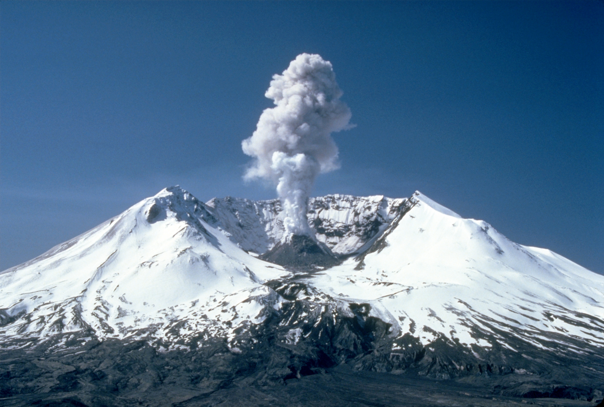
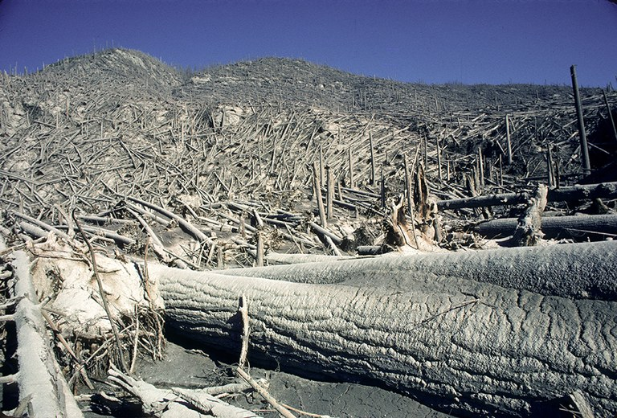

Images of the natural disaster and its effects:

Mount St. Helens erupted on May 18th, 1980, destroying the area around it. Causing many to lose their lives and their homes.
While the effects of this natural disaster was tremendous, there are many positives to come from its occurance. The main thing to note is the further advancement in technology that took place after it happened.
Because of the eruption, the evolution of tools such as photogrammetry, GIS and lidar advancements allowed scientist to make better measurements and illustrations of the Earth's surfaces.
